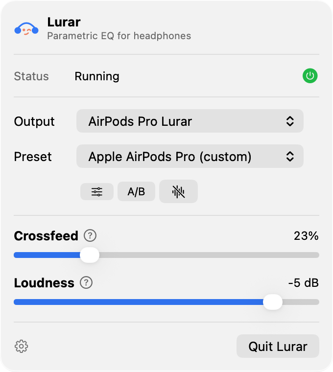
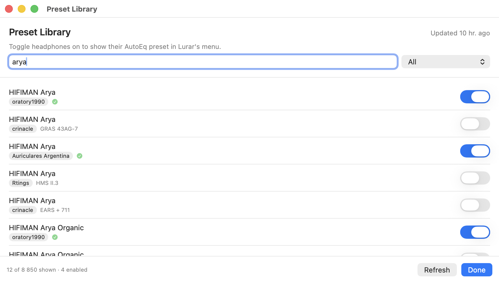
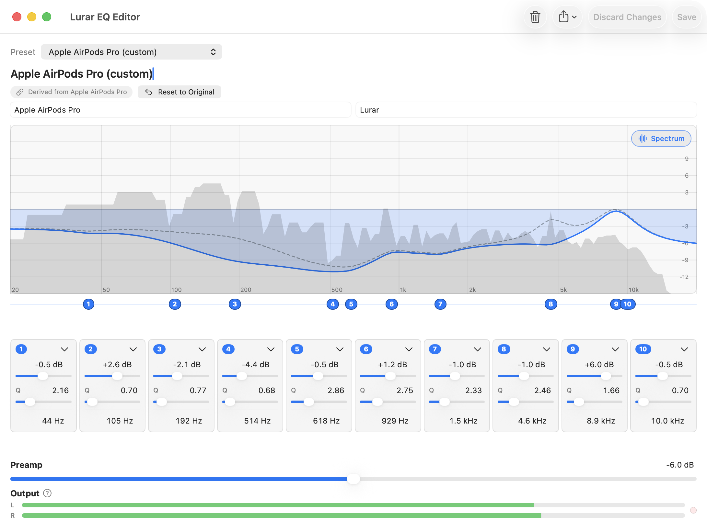
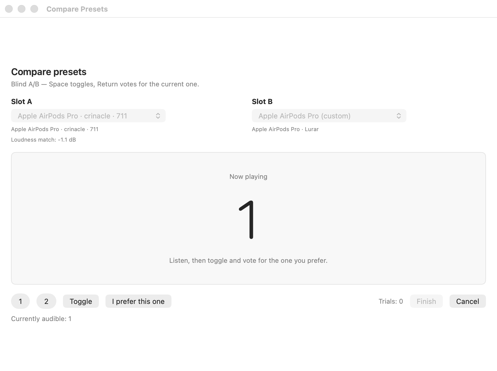
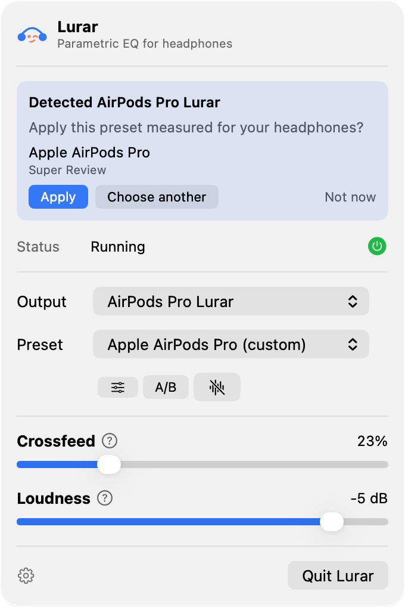
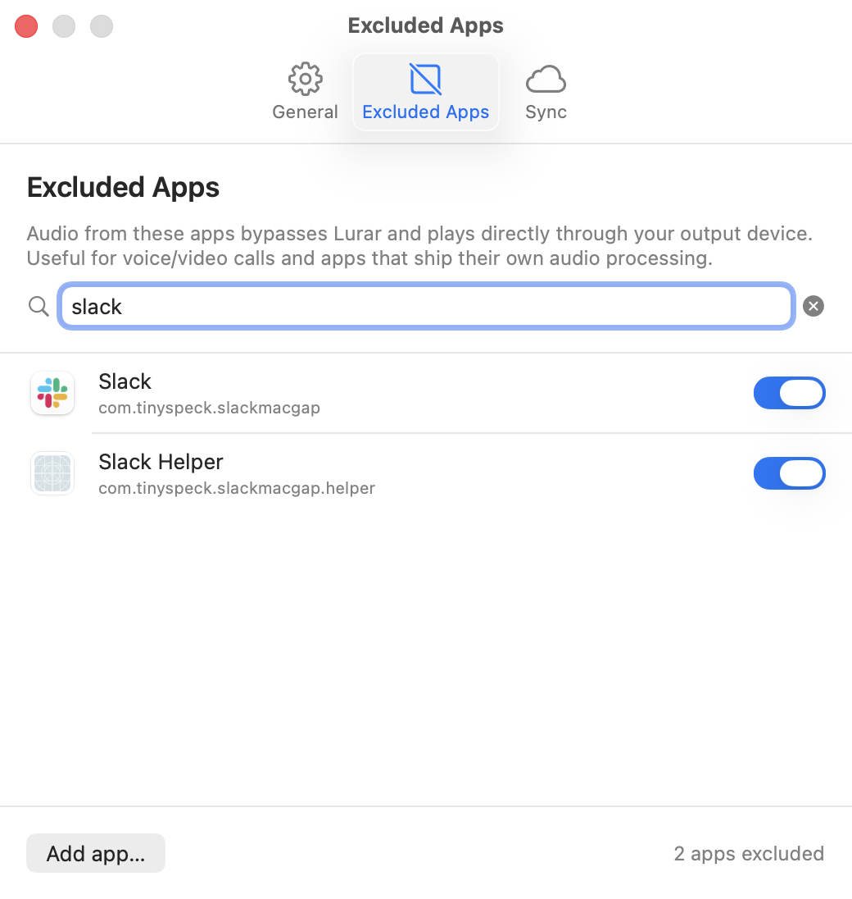
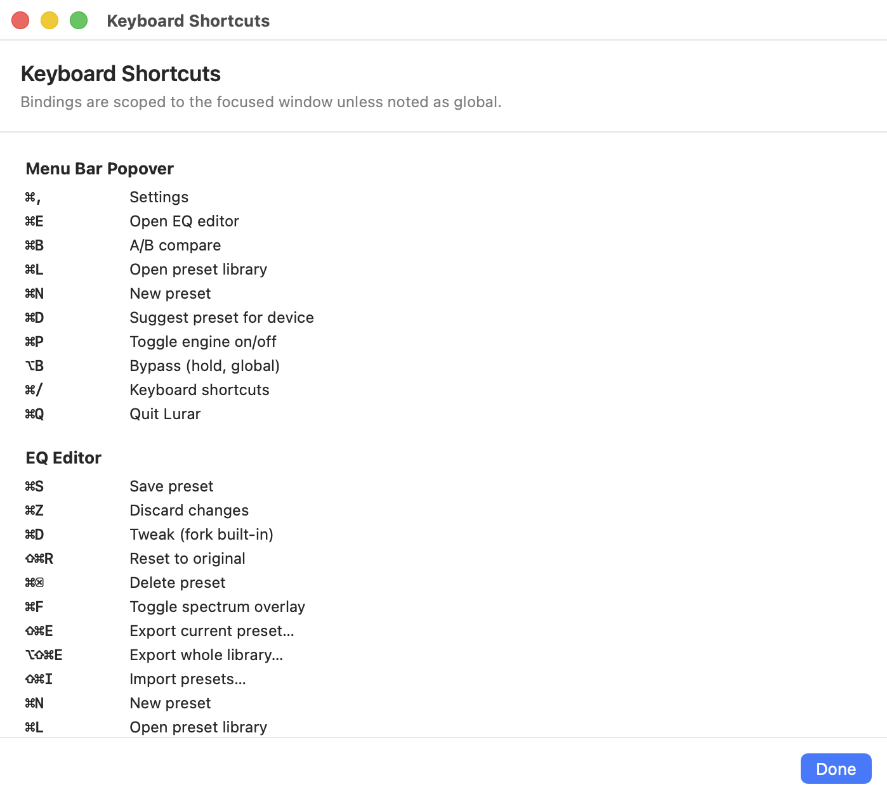
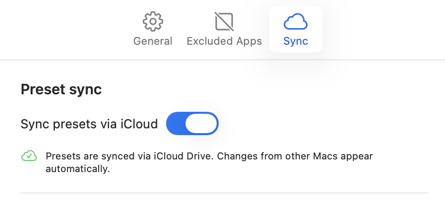

Headphone correction for macOS,
with AutoEq built in.
Lurar taps every app's audio via Apple's Core Audio Process Tap, runs it through a 10-band parametric EQ tuned to your headphones from the AutoEq catalog, and plays the result on your DAC. Free, no account, no driver to install.
Download for macOSbrew install --cask lsjoberg/lurar/lurar
Requires macOS 14.2 or later · Apple Silicon & Intel
- Open source (MIT)
- Free — no account
- No telemetry
- Signed & notarized

How it works
Lurar doesn't add a device to Sound Settings, doesn't load a kernel extension, and doesn't replace your output. macOS routes the audio through Apple's own Process Tap API — Lurar reads it, EQs it, and sends it on to whichever DAC you've chosen.
-
Any app
Music, Spotify, browser, conferencing — anything using Core Audio.
-
Process Tap
Apple's macOS 14.2 API. No driver, no extension, no orange mic indicator.
-
10-band EQ
Float32 vDSP biquad cascade, plus crossfeed and loudness compensation.
-
Your DAC
Played out via HAL Audio Unit — no resampling unless your device requires it.
Everything that's in the menu bar
Per-headphone presets, from the AutoEq catalog
Browse the whole AutoEq library — Oratory1990 over-ears, Crinacle IEMs, in-app search by brand. Enable a few for your headphones and they're one click away from the menu bar. Fork any catalog preset to tweak, with the original kept on screen as a dashed reference curve.


An editor for when you want to tune it yourself
Ten bands — low shelf, eight peaks, high shelf — with live preview, a post-EQ spectrum analyzer, and a sticky clip meter. Edits apply to the running engine instantly. Edits to a built-in preset silently fork into your library; the original stays one click away.
A/B compare, sighted or blind
Switch between two presets without leaving the editor. Blind mode masks which is which and records your votes; broadband RMS loudness-matches both so a louder curve can't win on volume alone.

Per-device memory & auto-suggest
Lurar remembers the last preset per output device — switch DACs and the right curve loads. First time you plug in headphones it knows, it offers to enable the matching AutoEq preset.

Crossfeed & loudness
Bauer-style crossfeed with adjustable intensity and head-shadow cutoff for binaural-friendly imaging. An ISO 226:2003 equal-loudness curve compensates for low-volume listening — the Fletcher-Munson smile, dialed in to a phon offset, not guessed at.

Per-app exclusion
Some apps manage their own EQ — exclude them by bundle ID and their audio bypasses Lurar entirely. Updated live; no engine restart needed.

Keyboard-driven, top to bottom
Every actionable control has a shortcut and a tooltip that names it. ⌘/ pops a cheat sheet grouped by screen so you can learn them in one glance. Even the bypass is a key — hold ⌥B globally to momentarily flatten the EQ (it's an A/B slot swap, so the transition is click-free).

iCloud preset sync
Flip a switch in Settings and your preset library follows you to every Mac you sign into. Lurar watches the file, debounces echo writes, and reloads cleanly on save.

How it compares
Lurar's niche is corrective headphone EQ. Here's how it stacks up against the apps people usually look at first.
| Capability | Lurar | eqMac | SoundSource | SoundID Reference |
|---|---|---|---|---|
| Price | Free | Free / paid tier | Paid | Subscription |
| Full AutoEq catalog | Yes | Paid tier | Curated subset | Proprietary DB |
| Blind A/B, loudness-matched | Yes | No | No | Sighted only |
| Crossfeed | Yes | No | Add-on | No |
| Loudness compensation | Yes | No | No | No |
| No virtual audio driver | Yes | No | No | No |
| System-wide capture | Yes | Yes | Yes | Yes |
| Per-device memory | Yes | No | No | Yes |
| iCloud preset sync | Yes | No | No | Account |
Capability matrix as of writing — competitors change their plans often. SoundSource and eqMac both have some form of AutoEQ-derived headphone EQ; the row above is about whether the full open AutoEq catalog is browsable in-app. Other tools worth a look for adjacent jobs: Boom 3D and dSoniq Realphones (consumer enhancement and mix-translation respectively), and a few newer utilities also use the Process Tap API to skip the driver. If anything's wrong here, open an issue.
What it touches on your Mac
- One network destination: AutoEq's GitHub raw URL, and only when you browse the catalog or refresh it. Lurar itself phones nothing home — no analytics, no telemetry, no accounts.
- Audio Capture (TCC) permission, granted once. Lurar reads the system mixer via the Process Tap API — it does not light up the orange mic indicator, because the tap isn't a HAL input AU.
-
Three local locations:
~/Library/Application Support/Lurarfor presets and the AutoEq cache,~/Library/Preferences/app.lurar.Lurar.plistfor settings, and the system-managed TCC grant. Each is independently resettable — recipes in the README.
FAQ
Where does the name “Lurar” come from?
Swedish, two meanings at once. Lurar is audiophile slang for headphones — what you'd casually call a pair of cans. It's also the verb to fool, as in to trick someone. The mark holds both: headphones at first glance, a winking face on the second.
Can I install it with Homebrew?
Yes: brew install --cask lsjoberg/lurar/lurar. That taps
lsjoberg/homebrew-lurar and installs the same signed,
notarized build you'd get from the DMG. Updates still arrive in-app
via Sparkle, so brew upgrade is normally a no-op. To
remove it completely, including presets and settings, run
brew uninstall --zap --cask lurar.
Does Lurar raise the orange microphone indicator?
No. Lurar reads tap samples via an AudioDeviceIOProc on
a private aggregate device — not via a HAL input AU — so the
orange indicator stays off. The device.audio-input
entitlement is required by Core Audio to deliver tap data once
TCC is granted, but the indicator is gated on a different API
path.
What about hi-res music players that use exclusive mode?
Apps that use HAL hog mode bypass Core Audio's mixer entirely and can't be tapped — by anyone. Switch the app out of exclusive mode if you want Lurar to EQ it. This isn't a Lurar limit; it's how exclusive mode is supposed to work.
Will the next macOS update break it?
Lurar uses Apple's own Process Tap API (added in macOS 14.2). There is no third-party driver, no kernel extension, no system audio device that an OS update can invalidate. If Apple ever changes the API, Lurar gets updated; you don't have to uninstall anything.
Is the audio path lossless?
Yes. Float32 internally, no sample-rate conversion unless your output device requires it (most don't). Crossfeed and loudness are structurally bypassed at zero settings — not just numerically flat, but skipped entirely.
Why not AVAudioEngine?
Direct HAL Audio Unit means lower latency, no involuntary AGC, and no opaque mixer behavior between us and the DAC. Lurar is the last DSP stage before your hardware.
What conflicts with Lurar?
Other tap-based or HAL-intercepting tools — most commonly Rogue
Amoeba's ARK driver (SoundSource, Audio Hijack, Loopback) — can
intercept tap data before Lurar sees it. If the EQ path is silent
and ARK is loaded, quit the offending app and run
launchctl bootout gui/$(id -u)/com.rogueamoeba.arkaudiod.
What's the “burn-in counter” in Settings?
A per-output runtime tally — how many hours the engine has spent driving each device. The name is a nod to the audiophile tradition of burning in new headphones by playing audio through them for tens or hundreds of hours, in the belief that the diaphragms loosen up and the sound improves. The evidence is contested at best; whether hour 200 sounds different from hour 1 is between you and your ears. Lurar just counts.